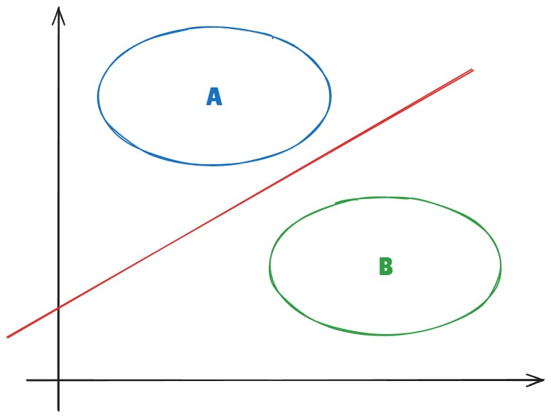
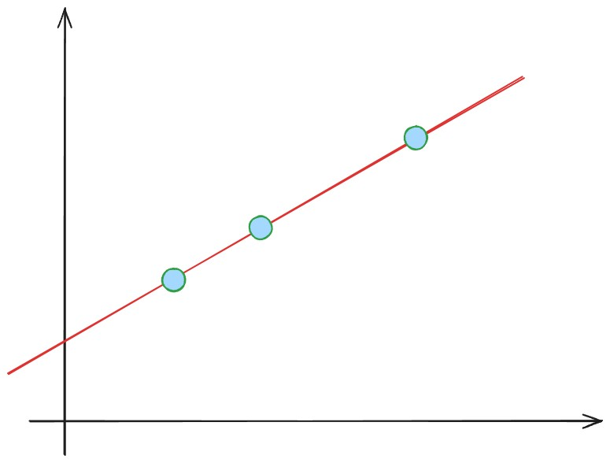
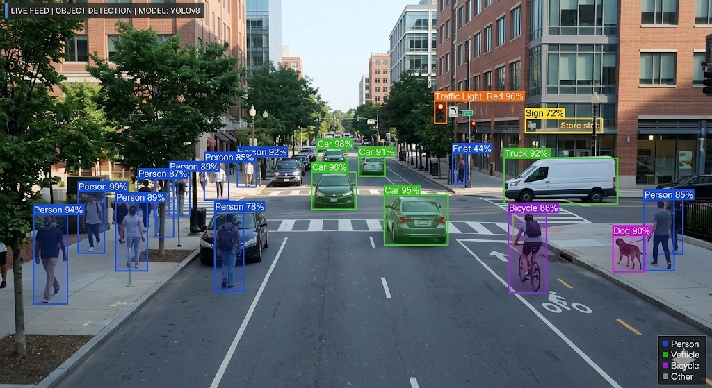
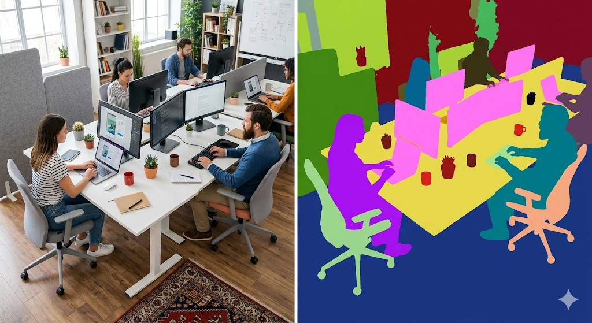

노코드 기반 GeoAI 이해와 활용
복습문제 1 - AI 이해와 활용
1. 요인의 수가 1개일 때 그려지는 그래프의 차원은?
- 1차원
- 2차원 ++
- 3차원
- 4차원
2. 요인의 수가 2개일 때 그려지는 그래프의 차원은?
- 1차원
- 2차원
- 3차원 ++
- 4차원
3. AI 학습 결과, AI가 다음과 같은 수식을 완성했다. 다음 수식의 a와 b를 일컫는 용어는?
판메량 예측 = a * 온도 + b * 습도 + c
- 모델
- 절편
- 예측
- 가증치 ++
4. AI 학습 결과, AI가 다음과 같은 수식을 완성했다. 다음 수식의 c를 일컫는 용어는?
판메량 예측 = a * 온도 + b * 습도 + c
- 모델
- 절편 ++
- 예측
- 가증치
5. 이메일 스팸 필터를 만들려 한다. 제목과 내용은 기존에 받았던 메일의 내용을 그대로 사용하면 되지만, 이 이메일이 정말 스펨메일이었는지 아닌지는 사람이 따로 표시해 줘야 한다. 이렇게 어떤 데이터의 최종 정답을 기입하는 것을 무엇이라 하나?
- 모델
- 절편
- 라벨링 ++
- 가증치
6. AI 기법에 의해 학습시켜 놓은 결과물을 무엇이라 부르나?
- 모델 ++
- 절편
- 라벨링
- 가증치
7. 인간의 언어를 이해하듯 답하고 생성하는 인공지능 모델은?
- 모델
- 가중치
- Fine Tuning
- LLM ++
8. 다음 중 LLM이 아닌 것은?
- chatGPT
- Gemini
- Claude
- Whisper ++
9. LLM 내부에 학습된 자료가 아닌 외부 데이터(pdf, 엑셀 파일 등)를 LLM이 읽고 답하는 기술은??
- fine tuning
- RAG ++
- LLM
- MCP
10. MoE에 대한 설명으로 틀린 것은?
- Mixture of Experts의 약자이다.
- LLM이 포함된 조합은 MoE라고 부를 수 없다. ++
- 여러 AI 모델들이 같이 일하는 방식이다.
- LLM이 사람의 요청을 분석해 그 일을 잘 처리할 것 같은 AI 모델에게 일을 시키는 방식이다.
복습문제 2 - AI 모델학습의 이해
1. 1970년대 초반 당시 AI 학계의 거장 마빈 민스키가 인공신경망으로는 할 수 없다는 것을 증명해 AI 겨울을 초래했던 연산의 종류는?
- AND
- OR
- XOR
- NOT
2. 2012년 부터 시작된 이미지넷 대회에서 그 이전과 달리 압도적인 결과로 우승한 것은 제프리 힌튼 교수팀의 알렉스넷이었다. 알렉스넷의 가장 큰 의의는?
- 머신러닝 시대의 본격적인 개막
- 딥러닝 시대의 본격적인 개막
- CPU를 극한으로 이용하는 AI 시대의 개막
- 비디오 생성 AI 시대의 본격적인 개막
3. 바둑은 그 많은 경우의 수 때문에 기계가 인간의 직관을 이길 수 없다고 여겨져 왔는데, 2016년 이세돌 9단을 이겨 딥러닝 대폭발의 시대를 가져왔던 모델의 이름은?
- 알파넷
- 이미지넷
- Lee
- 알파고
4. 기존에는 컴퓨터를 이용해 강아지를 인식시키기 위해 강아지의 특징을 컴퓨터에게 알려줬다. 예를 들면 “귀가 쫑긋하다“는 식이었는데 이런 이유로 귀가 접힌 강아지는 인식하지 못하는 문제가 있었다. 현재 AI 기법에서 사용하는 방법은?
- 귀가 쫑긋하다는 특징과 귀가 접힐 수도 있다는 특징을 모두 알려준다.
- 귀가 쫑긋한 건 강아지, 귀가 접힌 건 강아지2와 같은 식으로 별개로 알려준다.
- 귀가 쫑긋하거나 접힌 다양한 강아지 사진을 보여주고 학습시킨다.
- 이 문제는 아직 해결하지 못한 난제이다.
5. 머신러닝을 진행하는 과정으로 맞는 것은?
- 자료가공 - 자료수집 - AI 학습 - 예측
- 자료수집 - AI 학습 - 예측 - 자료가공
- 자료수집 - 자료가공 - AI 학습 - 예측
- 예측 - 자료가공 - 자료수집 - AI 학습
6. 머신러닝의 구분 중, 지도학습으로 묶은 것은?
- 분류, 군집
- 분류, 회귀
- 회귀, 군집
- 군집, 차원축소
7. 머신러닝의 구분 중, 비지도학습으로 묶은 것은?
- 분류, 군집
- 분류, 회귀
- 회귀, 군집
- 군집, 차원축소
8. 분류에 대한 설명으로 틀린 것은?
- 다양한 종류 중 어느 하나를 맞추는 것이다.
- 미리 정답을 알려주면서 학습한다.
- 새로운 사진을 주면 AI는 학습한 것 중 어느 하나라고 답한다.
- 숫자를 맞춘다.
9. 회귀에 대한 설명으로 틀린 것은?
- 연속된 값 중 하나의 값을 맞춘다.
- 미리 정답을 알려주면서 학습한다.
- 새로운 사진을 주면 AI는 학습한 것 중 어느 하나라고 답한다.
- 숫자를 맞춘다.
10. 군집에 대한 설명으로 틀린 것은?
- 스스로 자료를 판단해서 특징에 따라 자료를 나눈다.
- 학습하는데 오랜 시간이 걸린다.
- 미리 정답을 알려주지 않는다.
- 통계적, 수학적인 계산을 통해 특징을 나눈다.
11. 차원축소에 대한 설명으로 틀린 것은?
- 스스로 자료를 판단하는 방식이다.
- 미리 정답을 알려주지는 않는다.
- 랜덤하게 특징의 수를 줄인다
- 5차원 그래프를 3차원 그래프로 만드는 방법이다.
복습문제 3 - 노코드 오픈소스 AI툴
1. 데이터 분석과 머신러닝 입문에 좋은 Orange3 프로그램에 대한 설명으로 틀린 것은?
- 공공기관에서는 유료로 구입해 써야 한다.
- 데이터 분석에 탁월하다.
- 오픈소스이다.
- 익숙하고 직관적인 UI를 제공한다.
2. 오렌지3에서 제공하는 기능들은 왼쪽 아이콘으로 표시된다. 이 기능 아이콘들을 일컫는 말은?
- 노드
- 네트워크
- data
- 위젯
3. 오렌지3에서 제공하는 위젯을 클릭하면 오른쪽 캔버스에 추가된다. 이렇게 캔버스에 추가된 위젯을 일컫는 말은?
- 노드
- 네트워크
- data
- 위젯
4. 오렌지3에서 샘플 데이터를 마우스로 원하는 모양대로 그려 사용하는 위젯은?
- File
- Data Table
- Data Info
- Paint Data
5. x와 y의 관계를 점으로 그려주는 visualize 위젯은?
- violin plot
- scatter plot
- bar plot
- box plot
6. X의 값 중 1이 10개, 2가 20개, 3이 15개 있을 때 이러한 분포를 한 눈에 볼 수 있는 visualize 위젯은?
- violin plot
- scatter plot
- bar plot
- box plot
7. AI가 얼마나 예측을 잘했는지를 표시하는 방법으로 잘못된 것은?
- 정확도: 10개 예측했는데 그 중 몇 개 맞췄나
- 정밀도: 3개가 스팸메일이라 거라 예측했는데 그 3종목 중 실제로는 스팸메일이 몇 개였나?
- 재현율: 실제로는 5개가 스팸메일이었는데 그 중 몇 개를 제대로 에측했나?
- 예측율: 정확도와 정밀도를 아우르는 표현
복습문제 4 - 회귀 알고리즘
1. 지도학습 알고리즘에 대한 설명으로 틀린 것은?
- AI 학습 시 반드시 정답을 알려준다.
- 분류와 군집이 지도학습의 주요 종류이다.
- 라벨링된 엑셀 등의 자료를 보며 학습한다.
- 강아지와 고양이 사진을 주고 이건 강아지다 이건 고양이다 라고 학습시키는 것도 지도학습이다.
2. AI 모델이 자료를 분석한 결과 다음 그림의 빨간 선과 같은 선을 그릴 수 있었다. 이 선의 위와 아래를 기준으로 A자료, B자료라고 구분하는 것은?

- 분류
- 회귀
- 군집
- 차원축소
3. AI 모델이 자료를 분석한 결과 다음 그림의 빨간 선과 같은 선을 그릴 수 있었다. 이 선을 따라가는 연속된 값 중 어느 한 값을 예측하는 것은

- 분류
- 회귀
- 군집
- 차원축소
4. 값을 결정하는 요인들로 주로 X로 표현하며 통계학에서는 독립변수라고 하는 것은?
- feature
- target
- accuracy
- predict
5. AI가 맞춰야 하는 정답으로 주로 Y로 표현하며 통계학에서는 종속변수라고 하는 것은?
- feature
- target
- accuracy
- predict
6. 회귀 알고리즘의 최대 목표는?
- feature를 최소화하는 것
- target를 최소화하는 것
- accuracy를 최소화하는 것
- error를 최소화하는 것
7. 학습 데이터와 테스트 데이터에 대한 설명으로 틀린 것은?
- 학습 데이터는 AI가 학습하는데 사용하는 데이터이다.
- 테스트 데이터는 학습된 모델의 성능을 테스트하는데 사용하는 데이터이다.
- 둘은 반드시 분리해야 성능 평가를 정확히 할 수 있다.
- 학습 데이터 : 테스트 데이터는 8:2의 비율을 정확히 지켜야 한다.
8. 테스트 데이터는 학습에 사용하지도 않는데 target 값을 가지고 있는 가장 중요한 이유는?
- 특별히 지우는 것도 일이기 때문에
- AI가 예측한 값과 정답과의 차이를 확인하기 위해
- 테스트 과정에서 target 값은 자동으로 삭제된다.
- AI가 테스트 과정에서 양심적으로 target 값은 절대 읽지 않는다.
9. AI 모델이 훈련 데이터에 지나치게 완벽하게 맞춰줘서 새로운 데이터가 들어왔을 때 제대로 예측하지 못하는 현상을 무엇이라 하는가?
- 과적합
- MCP
- 분류
- 회귀
10. 그림과 같이 그래프가 선 모양으로 나오는 회귀 알고리즘은?
- 다항회귀
- 선형회귀
- 다중회귀
- 선적회귀
11. K개의 가장 가까운(최 근접) 데이터를 찾아 평균을 구하는 방법으로 예측하는 알고리즘은?
- K-NN
- Random Forest
- Decision Tree
- Gradient Boosting
12. 스무고개 방식이라고도 부르며, 거꾸로 된 나무 형태로 가지가 뻗어 나가며 값을 정리해 가는 알고리즘은?
- K-NN
- Random Forest
- Decision Tree
- Gradient Boosting
13. 많은 수의 Decision Tree로 부터 예측값을 받아 평균내는 방식으로 예측하는 알고리즘은 ?
- K-NN
- Random Forest
- Decision Tree
- Gradient Boosting
14. Tree 방식 중 하나로 나무 여러 개를 한 줄로 길게 세워놓고 첫 번째 나무에서의 오차를 그 다음 나무가 줄이는 방식으로 점점 오차를 줄여나가는 알고리즘은?
- K-NN
- Random Forest
- Decision Tree
- Gradient Boosting
15. random forest, gradient boosting과 같이 여러 모델들을 조합하는 집단 지성의 원리로 더 나은 결과를 낼 수 있는 기법은?
- K-NN
- 앙상블
- MCP
- geoAI
복습문제 8 - GeoAI
1. GeoAI에 대한 설명으로 틀린 것은?
- 컴퓨터를 이용한 공간 데이터 해석 기법이다.
- GeoSpatial + AI이다.
- 이미지 분석 위주인 경우가 많다.
- 드론이나 항공사진 촬영본만을 대상으로 한다.
2. 기존 방식과 현대의 GeoAI의 차이로 틀린 것은?
- 기존에는 사람이 직접 분석 규칙을 입력했다.
- GeoAI에서는 AI가 대용량 비정형 데이터를 학습해 처리한다.
- 기존 방식이 전반적으로 더 효율적이다.
- GeoAI에서는 자동화된 분석기법으로 처리한다.
3. 다음 그림과 같이 사진에서 특정 객체에 그 객체가 무엇일지 예측하는 사각형을 그려주는 것은?

- 객체 탐지
- 객체 분할
- 차원축소
- 분류
4. 다음 그림과 같이 사진에서 특정 객체의 영역을 찾아주는 것은?

- 객체 탐지
- 객체 분할
- 차원축소
- 분류
5. 메타(구 페이스북)이 개발한 모델로 객체 분할에 훌륭한 모델은?
- YOLO
- SSD
- Gemma
- SAM
6. 별도 다운로드없이 QGIS에서 바로 설치할 수 있는 플러그인으로, 공간정보 관련 AI 모델을 사용할 수 있는 플러그인은?
- YOLO
- GeoAI
- SAM
- Claude
7. QGIS GeoAI 플러그인에서 제공하는 기능이 아닌 것은?
- 이미지에서 차가 몇 대인지 세어주기
- 이미지에서 물의 위치가 어디인지 알려주기
- 이미지에 대한 전반적인 설명하기
- 이미지 생성하기